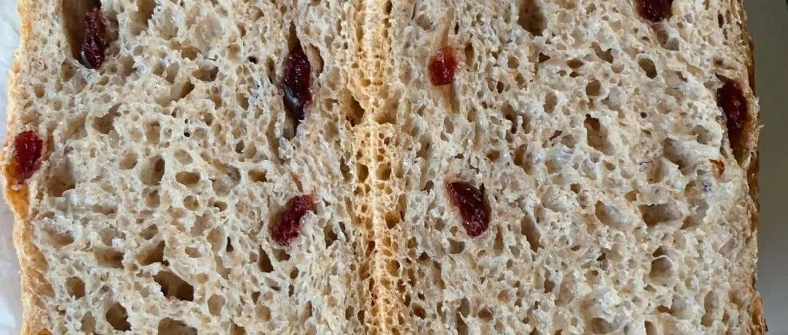

水星婆婆普及贴 - 奶油，奶茶和全麦面包
这篇文来源于我的一条朋友圈.

留言里面很多朋友并不知道一些我们平常吃的这些东西里面的猫腻，就想要么开个帖子专门给大家讲一讲。
【奶油】植物奶油和动物奶油的分别
植物奶油：英文名是non-dairy cream，是人造合成物，不含动物乳脂成分的奶油，其主要成分为水、植物油、糖、乳化剂、胶体、香精、色素等。
人造奶油相对动物奶油来说，大大降低了成本，且稳定性和储藏性良好。只不过人造奶油在加工的过程中会不可避免的产生反式脂肪酸。
动物奶油：英文名为whipping cream，主要成分为鲜牛乳，是一种以乳脂肪为基础的奶油。口感是一种淡雅的香甜，口感清爽香醇一点都不腻口，入口后感觉像冰激凌一样会自然融化。品尝后你就会发现口中有一股淡淡的而且持久的奶香。质地棉软，温度略高就容易融化，用来做造型时候极其不稳定，很难做复杂和立体感强的造型。
概念介绍完了，就可以和大家说一下，日常。因为其实很多人通过口感是分辨不出来的，何况，更多时候，我们吃的还是植物奶油。

图源来自于网络
一般可以从配料表上来看，比如我在朋友圈说的，85度C里面卖的几乎都是植脂奶油的裱花蛋糕。还有一些面包房没有说明配料的，可以询问。我顺手查了21cake，里面的蛋糕用的乳脂奶油，也就是动物奶油。Lecake诺心，用的是来自于法国和新西兰的淡奶油（默认是动物奶油，但是没有明确）。我们常见的巴黎贝甜和宜芝多，看了几个也是动物奶油。
另外，如果商家使用动物奶油，都会稍微标榜和宣传一下，配料表上会标注的比较明显。
我不是太建议看颜色和是不是容易融化，因为一来很多植物奶油打发的时候也会添加一些别的配料，颜色就不是那么白，加色素就更不用说了。还有就是为了保持形状，很多动物奶油里面会加奶酪或者黄油，做成奶油霜，延长定型的时间，也是很好的。
比如我尝试的这个：目前为止最喜欢的Topping
所以，如何分辨植物奶油和动物奶油呢，就是如果要吃，就吃好的，吃的多了，自然就能分辨了。哈哈哈。
如果大家要买的话，可以看到包装标识 Whipping cream，平常用到的，雀巢，总统，安佳，铁塔，蓝风车这些牌子都有的。1L装基本在40块左右，铁塔和蓝风车更贵一些。

【奶茶】植脂末的存在
植脂末，其实就是我们平常说的奶精。主要成分：氢化植物油、乳化剂、葡萄糖浆、酪朊酸钠、硅铝酸钠。
有人说无所谓，我反正不喜欢这类东西。
正宗的奶茶，其实是需要拉茶的，持续一段时间的反复拉茶，才能有丝滑的口感。一般我们现在市面的奶茶铺子，很少可以做到这个，太费人工。所以那我们退而求其次，起码可以用鲜牛奶吧。
目前一点点是用植脂末的，COCO要看店面，不同的是不一样的，桂源铺是说自己用鲜奶的。其他的喜茶、乐乐茶应该都是鲜奶的。具体的可以自己再问问，看一下。
还有就是做400次手作咖啡，要用没有植脂末的咖啡粉哦，需要用黑咖啡粉。不然打发不起来。400次手作咖啡
【全麦面包】到底含多少全麦粉
现在大家都崇尚健康，喜欢买全麦面包，全麦吐司。那么这些写着自己是全麦的面包，到底有多少全麦成分呢？
在配料表上，多数还是“小麦粉”排在第一位，即含量最高。小麦粉就是我们一般做面包用的面粉。全麦粉一般排在第二位或者第三位。
【只有配料表第一名是“全麦粉”才是真正的全麦面包】
有的同学和我说含量里有麸皮也可，讲真，我觉得不太可。好好的吃面包，讲究麸皮做什么？
我建议大家在买的时候，先看配料表，不要因为名字叫全麦，就以为是真的全麦了。下面列举几个给大家看看。（图源自网络）


可以再看看水星婆婆的配方表 最简单的铸铁锅硬欧包

这里面的高筋粉，可以按照40%-70%的比例进行替换，做出来是这样的。

（我用的200g高粉，160g全麦粉，44.4%） 口感略湿，表皮很脆。吃的时候，切片可以用小烤箱复烤，内里就会变得很韧，表皮更脆。全麦比例越高，会越韧。
要么，我接单吧？？？！！！你们买不买？嘻嘻
一般人基本可以适应40%-50%的全麦粉含量，超过50%，口感就会不太好，需要用爱发电，有特别的目标，比如减肥，比如健身，才能吃下去。
不藏私面包匠人，有一个普及的帖子，转载在这里给大家看看。
我知道大家都没耐心看这么长的科普贴，就把重点和大家说说。


也就是说，全麦粉含量越高的面包，越发小而坚硬。
另外，我不喜欢有很多添加剂的面包，正宗的全麦面包的配料，应该就是：面粉，水，盐，酵母，果干 这五类。
今天就讲到这里吧，祝大家都吃得健康！